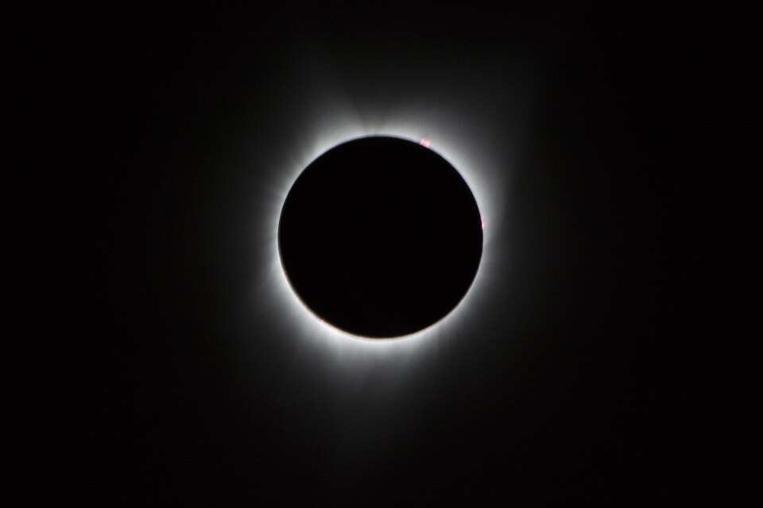

Eclipse solar
Total
La Luna tapa por completo el disco del Sol. Durante unos minutos el cielo se oscurece como al anochecer, baja la temperatura, aparecen las estrellas más brillantes y se ve la corona, la atmósfera exterior del Sol, que normalmente queda oculta por su brillo.
- Dónde se ve
- En una franja estrecha, normalmente de 100 a 250 km de ancho, por donde pasa la umbra de la Luna. Fuera de ella el eclipse es parcial.
- Duración
- La totalidad dura pocos minutos en cada lugar; como máximo, algo más de 7.
- Cómo observarlo
- Con filtro durante las fases parciales. Solo en la totalidad se puede mirar sin él.